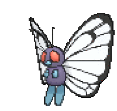

-
Bulbasaur #001

- Grama
- Veneno
フシギダネ
Fushigidane
Dual classe Grama/ Veneno, introduzido na Geração I. Há uma semente de planta em suas costas desde o dia em que esse Pokemon nasce. Evolui para Ivysaur no nível 16. É um dos três Pokémons iniciais, junto a Charmander e Squirtle. -
Ivysaur #002

- Grama
- Veneno
フシギソウ
Fushigisou
Evolui a partir do Bulbasaur no nível 16. Dual classe Grama/ Veneno, introduzido na Geração I. Evolui para Venusaur a partir do nível 36. -
Venusaur #003

- Grama
- Veneno
フシギバナ
Fushigibana
Evolui a partir do Ivisaur no nível 36. Sendo a forma final do Bulbasaur. Possui duas formas:
- Pode Mega Evolver para Mega Venusaur. - Pode Gigantamax para Gigantamax Venusaur. -
Charmander #004

- Fogo
ヒトカゲ
Hitokage
Pokémon do tipo Fogo, introduzido na Geração I. Evolui para Charmeleon, iniciando no nível 16; que, por sua vez, evolui para Charizard a partir do nível 36. -
Charmeleon #005

- Fogo
リザード
Lizardo
Pokémon do tipo Fogo, introduzido na Geração I. Evolui a partir do Charmander no nível 16. Evoluindo para Charizard no nível 36. -
Charizard #006

- Fogo
リザードン
Lizardon
Pokémon do tipo dual: Fogo/ Voador, introduzido na Geração I. Evolui a partir do Charmeleon no nível 36. Possui três formas: Mega Charizard X, Mega Charizard Y e Gigantamax Charizard. -
Squirtle #007

- Água
ゼニガメ
Zenigame
Pokémon do tipo Água. Introduzido na Geração I. Evolui para Wartortle, iniciando no nível 16. O qual evolui para Blastoise, a partir do nível 36. -
Wartortle #008

- Água
カメール
Kameil
Pokémon do tipo Água. Evolução do Squirtle a partir do nível 16. Evolui para Blastoise, iniciando no nível 36. Possui duas formas: Mega Blastoise e Gigantamax Blastoise. -
Blastoise #009

- Água
カメックス
Kamex
Evolução do Wartortle, a partir do nível 36. -
Caterpie #010

- Inseto
キャタピー
Caterpie
Pokémon do tipo Inseto, introduzido na Geração I. Evolui para Metapod, a partir do nível 7. O qual evolui para Butterfree, começando no nível 10. -
Metapod #011

- Inseto
トランセル
Transel
Pokémon do tipo Inseto, introduzido na Geração I. Evolui a partir do Caterpie no nível 7. O qual evolui para Butterfree, começando no nível 10. -
Butterfree #012
- Inseto
バタフリー
Butterfree
Pokémon dual tipo: Inseto/ Voador, introduzido na Geração I. Evolui a partir do Metapod no nível 10. Sendo a forma final de Caterpie. Pode Gigantamax para Gigantamax Butterfree.
POKÉMON